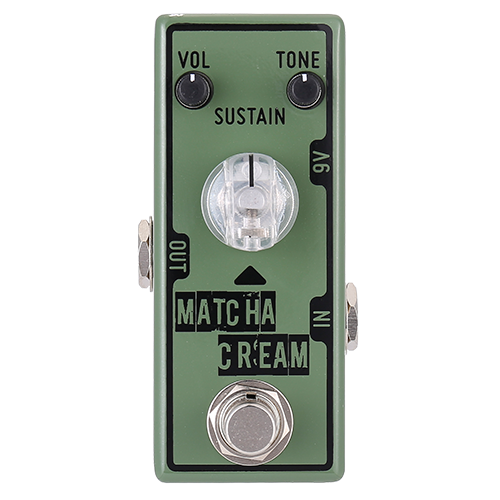

Tone City Matcha Cream

Overview
No official PDF manual, compiled from the official website.
The Tone City Matcha Cream is a mini-sized fuzz pedal inspired by the classic Russian "green" fuzz circuits. It delivers a rich, thick, and sludgy fuzz tone that works exceptionally well for both rhythm and lead playing.
Housed in a compact enclosure, it maintains a small footprint on your pedalboard while providing massive, sustaining fuzz tones suitable for a wide range of genres, from classic rock and grunge to doom metal.
Contents
Controls
- Volume: Adjusts the overall output level of the pedal.
- Tone: Adjusts the high-frequency content. Lower settings provide a dark, sludgy tone, while higher settings yield a crisp and defined edge.
- Sustain: Controls the amount of fuzz/gain and the length of note decay. Higher settings result in long, singing sustain.
Specifications
- Type: Fuzz (Russian style)
- Input Impedance: 1 MΩ
- Output Impedance: 10 kΩ
- Bypass: True Bypass
- Dimensions: 94 mm (L) x 45 mm (W) x 48 mm (H)
- Weight: 258 g
Power Requirements
The Tone City Matcha Cream requires a standard 9V DC power supply with a center-negative polarity (2.1 x 5.5 mm barrel plug).
Current Draw: 4 mA
Note: Due to its compact mini-pedal enclosure, this pedal cannot be powered by a 9V battery. A dedicated power supply is required.